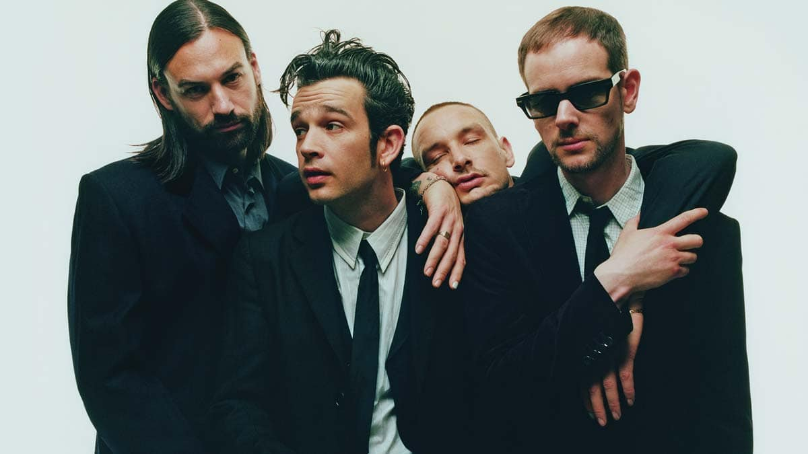

ABOUT

The 1975 English pop rock band formed in Manchester in 2002. Known for blending indie, pop, and electronic influences, the band has become an icon of modern sound and aesthetics. Their work explores themes of identity, technology, and culture with minimalist visuals and bold typography.
Discography
- The 1975 (2013)
- I Like It When You Sleep, for You Are So Beautiful yet So Unaware of It (2016)
- A Brief Inquiry into Online Relationships (2018)
- Notes on a Conditional Form (2020)
- Being Funny in a Foreign Language (2022)
Members
- Matty Healy – lead vocals, rhythm guitar, piano, keyboards
- Adam Hann – lead guitar, keyboards, backing vocals
- Ross MacDonald – bass, keyboards, backing vocals
- George Daniel – drums, programming, percussion, keyboards, backing vocals